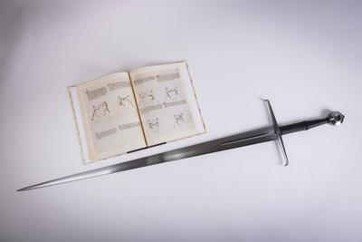
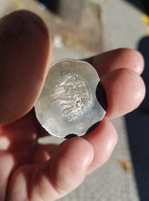
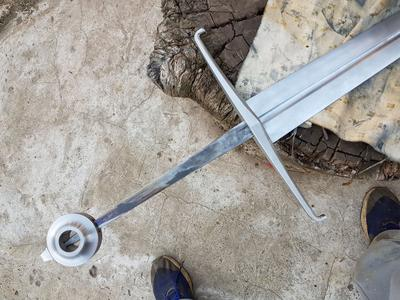
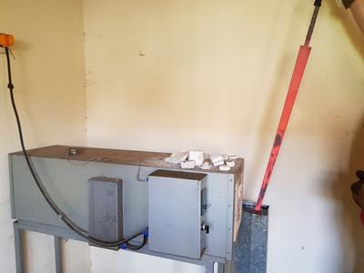

Longsword by Leonardo Daneluz, my best sword!
The sword
(click the photos to see the full resolution versions)

It's a longsword made in the typical style of the year 1400, with a special reinforced tip (useful to fight against armor), and an actual medieval coin in the pommel.
Weight: 1.515 kg.
Length: 119.5 cm (118.5 cm not counting the pin block), 93 cm blade.
Width: 5.55 cm at the base of the blade.Thickness: 6 mm at the base of the blade, then tapers to 3.75 mm at the thinnest point (near the center of percussion), but then thickens again to 5 mm near the tip.
Blade steel: quenched and tempered SAE 5160.
Guard steel: quenched and tempered AISI 1045.
Grip: made of really hard wood (Lapacho), with both hexagonal (near the guard) and oval (near the pommel) cross sections. Covered in string to give it the texture, resin, and then cow leather above it.
Coin: the coin in the pommel is an actual coin from the year 1180, with an image of Manuel I Komnenos, a Byzantine emperor.
Maker: Leonardo Daneluz. More of his high quality work in his facebook page.

Gosh, I'm really happy with this sword :D
{kind=link}

With "Il Fior Di Battaglia", a medieval martial arts manuscript from around 1400 (you can read it online!). People from that time didn't just crudely bash themselves with blunt heavy swords. In reality, swords were fairly light and agile, quite sharp, and they had very developed martial arts around their usage. Luckily many manuscripts from the time survive, which we can use to revive those martial arts (google "HEMA" if you want to see people practicing them).


Here you can see the pin, which is the end of the tang (the part of the blade that continues inside the grip). And also a glimpse of the coin (better pictures below).

The details of the coin. A little shiny because of the oil used to keep the sword from rusting. You can see the figure of Manuel I Komnenos.

With a rondel dagger, a type of dagger designed to fight people in armor, usually carried by knights and man-at-arms along this kind of swords.

Scolari is a HEMA study/practice group that we founded in Argentina. We focus on the teachings of Fiore dei Liberi, the medieval martial arts master that wrote the manuscript you saw before. https://www.facebook.com/scolariesgrimahistorica/
{kind=link}
A better picture of the coin, before it was embedded in the pommel.
{kind=link}
The sword without the grip and coin. You can see how the blade goes all the way through, sticking out of the pommel. This is how historical swords were built.

To give it its final texture, the artisan not only uses string below the leather, but also above it. After a short while, the top string is removed, and the leather keeps its texture, providing better grip but also a nicer finish.

That's a heck of a thick point.
{kind=link}
Leonardo quenching it! :)
He's well known for the quality and historicity of his work. If you like medieval swords, then you should definitely check his swords.
Hope you enjoyed it as much as I do. Bah, that's impossible :p
(Thanks Ruth Teller for most of the photos!)
Comments
Comments powered by Disqus